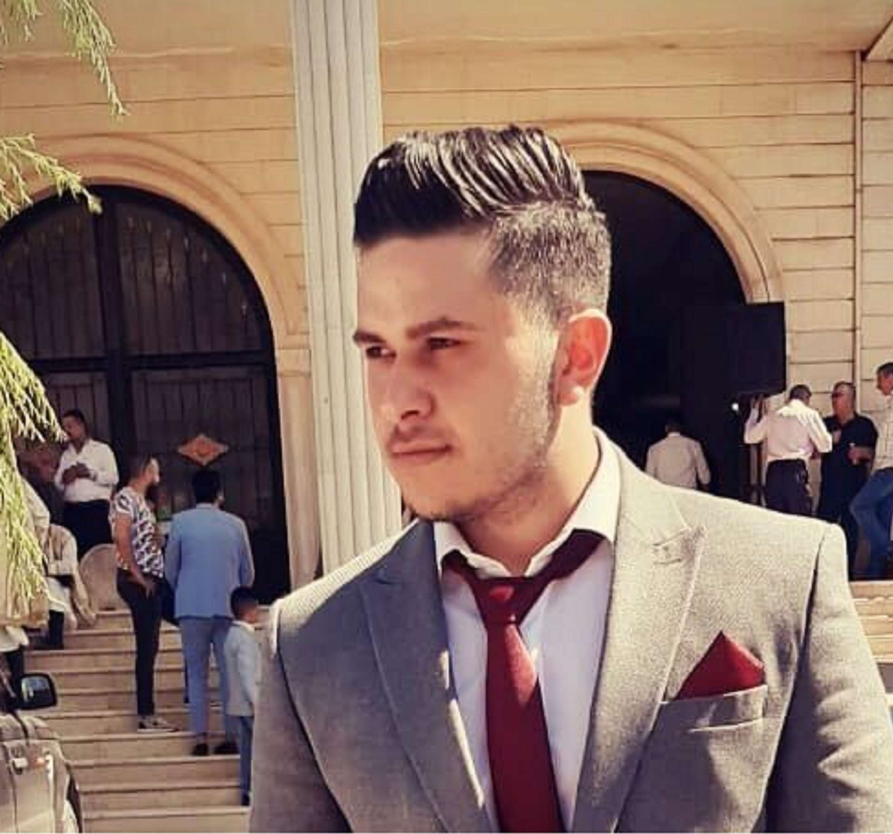
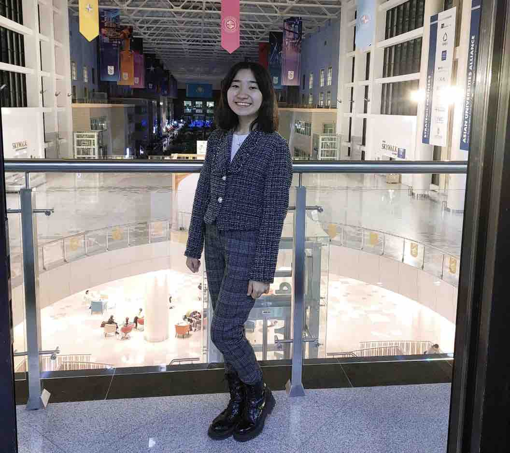

Aruzhan Mardissadyk
Research Assistant (Kazakhstan)
Integration Team Member
Integration Team Member
Who are you and where are you from?
I am from the worlds first spaceport for orbital and human launches, Baikonur, Kazakhstan. Currently, I am a fourth-year Undergraduate Student at Nazarbayev University and my major is Political Science and International Relations.What do you do at CoronaNet?
I am a Research Assistant and member of the Integration Team coding the policies related to COVID-19 for Kazakhstan. My responsibilities in the CoronaNet project include checking policies in the database, integrating and coding them.How long have you been with CoronaNet and why did you join?
I joined CoronaNet Research Project in January 2022. I was seeking ways to develop my academic research skills. In this case, CoronaNet was a great opportunity provided by the university in the role of a Research Assistant. Furthermore, I realised that this project would be a place to be connected with many researchers from different parts of the world in order to help in solving a COVID-19 consequences that have become global and dangerous.What are your research interests?
I have several areas of interest. For instance, I am interested in Public Policy, especially in the themes such as civil and human rights, legalization, and freedom of speech. I would like to continue research in these areas in more depth.
Natalie Ellis
Co-Manager (China)
Expert Research Assistant
Expert Research Assistant
Who are you and where are you from?
I am a second year Occupational Therapy Doctoral student. I am a Canadian-American dual citizen and I lived in Shanghai, China for four years!What do you do at CoronaNet?
I started as an RA for Canada, responsible for Saskatchewan and New Brunswick. Now I am a country co-manager for China and I oversee 32 regions and 13 awesome Research Assistants! On a weekly basis check in our RAs, onboard new RAs, and review coded policies for accuracy. I am also working on organizing our internal management documents to make our communication with RAs more efficient.How long have you been with CoronaNet and why did you join?
I joined CoronaNet about one year ago in February 2021. I joined after working in a nursing home throughout the pandemic because I wanted to help with COVID-19 recovery with a global perspective. CoronaNet also provided a great opportunity to develop my research skills I had initially learned in undergrad and grad school. My time so far with Coronanet has been amazing and I am so thankful to be a part of this intelligent, kind, and dedicated international community!What are your research interests?
I am interested in social science and public health. I am currently developing ideas for my capstone project next summer and would like to conduct a meta-analysis on a specific population. As a future occupational therapist, I will work as a clinician and hopefully help to expand the evidence base for occupational therapy practice.Altynay Askerova
Research Assistant
Who are you and where are you from?
I am from one of the most incredible cities in the world, Almaty, Kazakhstan. I finished my first year at Nazarbayev University a few months ago and decided to pursue a Political Science and International Relations major there!What do you do at CoronaNet?
As for my responsibilities in the CoronaNet project, I am a Research Assistant, coding the COVID-19 policies for the United Kingdom into our database. Currently, I am working on Social Distancing and Declaration of Emergency measures the UK government has taken against the virus battle. Firstly, the collected data is carefully reviewed by me to determine whether it fits our requirements of a relevant policy, and then I code them into our CoronaNet database. Finally, the policies get checked by data cleaning teams to minimize the possibility of measurement errors.How long have you been with CoronaNet and why did you join?
I joined the CoronaNet Research team in April 2022. I desired to join here because I kept an eye on the project for a prolonged time, its goals inspired me, and I also wanted to become a part of the contributors to the fight against the COVID-19. In addition, a better option for starting my research path could not be found, so here am I!What are your research interests?
The area of my research interests goes beyond Politics only and focuses more on Sociological reasoning of Political events, namely Political Sociology. Besides that, analyzing political conflicts, human rights, and international relations, in general, seems particularly fascinating. In the future, I plan to go into academics and expand my knowledge and, consequently, research interests.Milana Kapezova
Research Assistant

Who are you and where are you from?
I was born in Pavlodar, Kazakhstan. I am a third-year student at Nazarbayev University (Kazakhstan) majoring in Mathematics.What do you do at CoronaNet?
I am a Research Assistant for Bulgaria. I aim to code policies related to the measures taken by the Bulgarian government in response to COVID-19 to enable academic and applied researchers, journalists, and decision-makers better to understand the causes and consequences of these policy responses.How long have you been with CoronaNet and why did you join?
I joined CoronaNet on June 6, 2022, after being offered the opportunity by Nazarbayev University. I received several emails about the recruitment but was not sure if I would be chosen since the preference was given to senior students. I had two ways: take the risk or lose the chance. So I decided to apply for the internship since I have a great desire to make my contribution to the fight against the COVID-19 pandemic.What are your research interests?
I am curious about the effect of the pandemic on our society. We are all aware that the pandemic caused by COVID-19 has been an unprecedented global crisis and there are still many areas to be explored and many unknowns to be resolved. By participating in the CoronaNet Project, I have an opportunity to stay up-to- date on the policies the governments implement and gain valuable experience in analyzing data to help fight against COVID-19.Miles Li
Research Assistant
Who are you and where are you from?
I am currently a third-year undergraduate student at New York University studying Psychology.What do you do at CoronaNet?
What do you do at CoronaNet? I am currently a Research Assistant at CoronaNet, coding mainly on External Border Restrictions and Quarantine policies for Austria regarding COVID-19. I spend most of my time researching policies that may fall under these categories through news outlets and Austrian government websites. If I were to find a policy that has not previously been coded into the CoronaNet database, I would enter it into our database.How long have you been with CoronaNet and why did you join?
I joined CoronaNet in April 2022. I was learning German and trying to find a way to practice my language and gain experience in research in general. These were definitely two of the main reasons I joined the project. I was also really interested in how the pandemic has impacted and shaped our lives in the past two years, and I think all of our work at CoronaNet would no doubt help future researchers who wish to learn about such things, and I am glad I can contribute something to it.What are your research interests?
My interest in research is in gender roles and stereotypes. I am interested specifically in the change in such roles and stereotypes during and after the pandemic, as in such a time, many people went through changes in their careers, environment, and ways of connecting and socializing with other people. Many also spent more time at home because of companies and schools going virtual. I am interested in how these changes impact our associations with different genders or if there is a change at all.Xiatian Ye
Research Assistant
Regional Manager
Regional Manager
Who are you and where are you from?
I came from China three years ago. Currently, I am pursuing my master's degree in Politics and Technology at TUM. I graduated from the University Of Nottingham Ningbo China with a degree in International Studies.What do you do at CoronaNet?
I am a Research Assistant on this project, coding for Slovakia. As part of my work, I am researching and cleaning policies regarding the Slovakia governments response to the COVID-19 pandemic. Subsequently, I became Co-manager for Eastern Europe and Western Asia region, helping to onboard new RAs. In the meanwhile, I have also contributed to the missing-end-date group for adding the end date to policies of different countries. Currently, I am also coordinating the publishing of weekly interviews on CoronaNet Twitter.How long have you been with CoronaNet and why did you join?
Since April 2022, I have been a member of this project. I was seeking more experience in academic research. After receiving the recruiting e-mail from University, I realized it is my chance to participate in future research on this pandemic while improving my research skills. In addition, this project provides me the opportunity to work with researchers from different backgrounds.What are your research interests?
I am interested in the impact of the Covid-19 pandemic on education. There was a worldwide school closure during the pandemic. Children in some countries attend classes online instead of on-site. Unfortunately, in some countries lacking in resources, children are deprived of education for months at a time. Hence, I tend to develop my R skills and use them in my future research on this topic.Hans–Peter Nowak
Research Assistant
Data Science Team Website Team
Data Science Team Website Team
Who are you and where are you from?
I am from Munich, Germany where I study Political Science B.Sc. in the final steps at TUM University. Additionally I study International Law LL.B. at the University of Hagen to dig deeper into developing some legal skills. I personally enjoy creating artificial art and music out of algorithmic coding. My main hobby is traveling round the globe to discover new things.What do you do at CoronaNet?
What do you do at CoronaNet? I am coding subnational policies for team Germany in the role of an Research Assistant while also mainly supporting the Data Science Team in many aspects targeting on data science and visualisation. Therefore, I am also implementing social media and mail automatization to the project.How long have you been with CoronaNet and why did you join?
I joined CoronaNet in the end of 2021, to become part of a briefly new and exciting research project, which is also operating around the world. In support for this project I wanted to gain social science research skills, reach out international knowledge exchange and personally extract something good out of the Covid-19 pandemic for the following researchers and generations, which may refer to this already amazing dataset. In the almost familiar CoronaNet community, everything comes together in a nice atmosphere.What are your research interests?
My research interests are based on developing artificial intelligence methods to detect, cause and analyse social media network interactions on policy changes and implications. Social media offers a new way of big data and behavioural research opportunities. Our all-daily life is almost targeted by machine learning and algorithms.Muneeba Rizvi
Research Assistant
Who are you and where are you from?
I am from India. I studied engineering and am now pursuing a masters degree in politics and Technology at Technical University Munich. I love reading and gardening. Great ideas come to me while procrastinating.What do you do at CoronaNet?
My tasks require focusing on coding new policies, integrating policies, and cleaning them. I also contribute to coding missing end dates for policies from different countries. Based on availability, I also help in other small tasks the project may require help withHow long have you been with CoronaNet and why did you join?
I joined CoronaNet in April 2022. I initially read about the work and scope of the project and also heard the positive feedback members of my cohort had. I figured the project would be a great place to learn new things and also do a bit to contribute to public good.What are your research interests?
My research interests are centred around public policy and governance. I find it fascinating how good governance can change the discourse in a society. I have taken a special interest in education and technology development. My interests are complemented by different volunteer experiences.Celine Heng
Research Assistant (Bulgaria)
Data Science Team
Co-regional Manager for Eastern Europe & Western Asia
Data Science Team
Co-regional Manager for Eastern Europe & Western Asia
Who are you and where are you from?
I am from Singapore and I moved to Munich in October 2020 to pursue my Masters in Politics & Technology at the Technical University of Munich.What do you do at CoronaNet?
What do you do at CoronaNet? I am a Research Assistant for Bulgaria, where I clean, code and integrate lockdown, curfew and quarantine policies for the country. I co-manage the Eastern Europe and Western Asia region as well. I am also part of the data science team where I help build machine learning models to classify the institution levels of the policies.How long have you been with CoronaNet and why did you join?
I joined the project in October 2021 as an intern. The covid-19 pandemic is an unprecedented phenomenon and hence it’s essential to observe the different policies implemented which could help better prepare future generations.What are your research interests?
My interests lie in the fields of innovative digital technologies such as Machine Learning, Artificial Intelligence and analytics and their implications on our society, politics, businesses and environment.Kader Saygili
Research Assistant (Denmark)
Who are you and where are you from?
I come from Istanbul, Turkey but Ive been living in Munich, Germany since 2019. I am a Politics & Technology M.Sc. student at Technical University of Munich.What do you do at CoronaNet?
What do you do at CoronaNet? I am a Research Assistant for Denmark, which means that I am responsible for making a timeline of the Covid-19 policies of the country up to date. So far, I have been collecting and coding data regarding two policy areas, namely Quarantine Policies and External Border Restrictions. Since I have joined the team in mid-November 2021, there were previous codes made by other RAs from the beginning of the pandemic. However, I am completing the policies gap roughly from 2020 to today.How long have you been with CoronaNet and why did you join?
I have joined the CoronaNet project in mid-November 2021. Covid-19 may be one of the milestones of the world’s history, and keeping track of it might enlighten future generations’ paths. We are witnessing an event that happens only once in a century, and I wanted to have an impact on the research that helps to understand the phenomena. In addition, I was looking for an intern position where I could learn new skills and work in a motivated team, so CoronaNet seemed to be a perfect opportunity for that.What are your research interests?
My research interests are mainly focused on new technologies and their impacts on society and politics. To be precise, I am interested in data-driven technologies such as Artificial Intelligence and their consequences. However, since these technologies are driven by human effort, they are not perfect for equality and fairness. So, I try to investigate how they contribute to the existing unfairness of society and politics (e.g., a racial bias of AI-based predictive policing).Setshaba Taukobong
Research Assistant (Botswana)
Data Science Team
Data Validation team
Data Science Team
Data Validation team
Who are you and where are you from?
I am from Johannesburg, South Africa, currently in the process of completing my MSc in Bioinformatics at The University of Pretoria.What do you do at CoronaNet?
What do you do at CoronaNet? I am a Research Assistant, coding for Botswana. In this role, I help collect and code governmental policies implemented by Botswana to reduce the Coronavirus infection rates. I am also part of the Data validation and Date Science Team where I double code policies and build machine learning models to access and predict the accuracy and quality of the coded data.How long have you been with CoronaNet and why did you join?
I have been part of the CoronaNet Research Project since March 2021. I joined the project because I wanted to be part of a community that’s working together towards greater cause. I saw it as an opportunity not only to contribute my skills and time towards curbing the global coronavirus pandemic but also develop new skills and build on my existing experience and knowledge.What are your research interests?
My MSc research has mainly been focused on antibiotic resistance reversion studies using RNA sequence data and my research interests lie in data analytics.Nicole Mattson
Country Manager (Mexico)
Research Assistant (Mexico)
Data Validation team
Research Assistant (Mexico)
Data Validation team
Who are you and where are you from?
I am from Minneapolis, Minnesota in the United States. I studied Political Science and Mass Communication (B.A.) at the University of Minnesota. Now I am working on my Master’s at the University of Oklahoma. I enjoy photography and reading books.What do you do at CoronaNet?
What do you do at CoronaNet? As a Research Assistant for Mexico, I focus on coding subnational policies pertaining to COVID-19. Mexico has a lot of health monitoring policies since their federal government created the Semáforo (‘traffic light’) system for all the states to take over implementing COVID-19 policies. I look for sources for these policies on state government websites and newspapers. As Mexico’s Country Manager, I serve as a point of contact for the other Research Assistants with questions and organize the policies we work on. For the Data Validation team I recode policies entered into the system from different countries to ensure accuracy for the dataset.How long have you been with CoronaNet and why did you join?
I joined CoronaNet in January 2021. I wanted to gain social science research skills, more international experience (I plan on living abroad), and to make use of my time pertaining to current events. I also wanted to feel a sense of community and meet people from all over the world, both of which CoronaNet successfully provides.What are your research interests?
I have several research interests. In the past, I have done research on voter identification laws in the U.S. and whether it deters people from voting in presidential elections, then shifted my focus to the international realm and did research on comparing political dissent in different countries. I have an interest in the role of nuclear weapons in national security, as well as the effects of mass media on governmental dissent and political party polarization. My other area of interest is instability in Latin American countries and the effect it has on migration.
Yerkezhan Nurbayeva
Co-Country Manager (Russia)
Who are you and where are you from?
I am a senior at Nazarbayev University (Nur-Sultan, Kazakhstan), majoring in Political Science and International Relations.What do you do at CoronaNet?
What do you do at CoronaNet? Currently, I spend most of my time guiding research assistants responsible for data collection for Russia on the subnational level. I also lead a team of very experienced RAs in charge of cleaning data in Eurasian countries. Overall, I try to quickly respond to any questions and suggestions, share ideas on how to increase data quality, and offer both professional and personal support to research assistants.How long have you been with CoronaNet and why did you join?
I joined the project at the beginning of January 2021. I learned about the CoronaNet Project a couple of months before I joined from fellow NU students. Besides being completely fascinated by an enormous work on crisis policymaking that was done by aspiring and advanced researchers, I think I really wanted to become a part of such a dynamic community. I was excited to learn that Dr. Caress Schenk was recruiting students from our university, and I made sure to apply as soon as possible.What are your research interests?
Over the last four years at NU, I have studied international political economy and global finance as part of my academic interests. Ever since I was a freshman, I have taken every opportunity to enroll in classes that examine political determinants of global economic developments. I am particularly interested in studying Kazakhstan’s experience of regional integration within the Eurasian Economic Union.Avirat Desai
Research Assistant for Greece
Border Cleaning Team
Border Cleaning Team
Who are you and where are you from?
I am from India and currently studying Energy and Climate Policy at the Technical University of Munich. Hiking and biking are two of my hobbies.What do you do at CoronaNet?
What do you do at CoronaNet? I am a RA for Greece for 5 policy areas, which means coding and cleaning policies for these areas. Further, I clean policies as a part of the Border Cleaning Team by correcting incorrect/missing data in already coded policies. My goal is to code policies effectively and efficiently, learn from the different roles CoronaNet has to offer, and help contribute to a database that shall be useful in future crises and also in numerous other studies.How long have you been with CoronaNet and why did you join?
I joined CoronaNet on 1st Nov, 2021. The basic idea of the project really got me into knowing more about it, and the efficiency and accuracy with which all the policies are coded made me want to contribute to it. Further, it aligns with my political science background, and this gives me a chance to document policies as well as observe political behaviors during a crisis.What are your research interests?
My research interests align with how the world can transition towards clean energy sources and help mitigate the effects of climate change by framing effective policy mixes. So it’s an interdisciplinary interest in energy transition, climate change, and political science.Rawaf al Rawaf
Research Assistant
Who are you and where are you from?
I work at the University of California San Diego, researching and modeling wildfire behavior. I’ve lived in the Middle East, the USA, and Europe.What do you do at CoronaNet?
What do you do at CoronaNet? I code policies from the State of Wyoming for Team USA. I also took part in the COVIDAMP Data Integration pilot project.How long have you been with CoronaNet and why did you join?
I joined the CoronaNet Research Project in May 2020. I hoped to learn more about policymaking, resilience to COVID-19, and to contribute in some way to the historic challenge and global effort to overcome this novel virus.In addition, I ve found a welcoming community of smart, engaging people from around the world committing their talents and energy towards the same goal of making a difference. My CoronaNet experience has taught me that much can be accomplished when good will, a pressing need, and a true sense of community come together.
What are your research interests?
My background is in Environmental Science, the resilience of Social-Ecological Systems, and Sustainable Development. My research interests lie at the transdisciplinary nexus of Policy, Economics, and Ecology, especially with regard to the planning and design of our cities and urban environments.What would a 21st century city designed for humans (rather than automobiles), and for integrating and enhancing local ecosystems, be like? How would it function, and what impacts would it have on climate change, biodiversity loss, quality of life - even novel diseases? These are questions I d like to research.

Santiago Torres Hernandez
Project Management
Who are you and where are you from?
I am a Mexican graduate student at the Technical University Munich who loves interacting with new cultures and exploring new places. I am curious by nature and always looking for the next adventure.What do you do at CoronaNet?
What do you do at CoronaNet? Iam part of the project management team so in essence I, together with the rest of the team, am responsible for making sure that the project runs as smoothly as possible. It is my goal to provide the optimal environment with the resources we have so that the most important part of our project, the people that make it up, can have the best possible experience while being part of the CoronaNet community.How long have you been with CoronaNet and why did you join?
I first joined in April 2020 in the context of a university class. I stayed there for 6 months and then took a break for personal reasons. However, I jumped at the opportunity to re-join in February of 2021 because I really enjoyed the work and feeling part of such a diverse and engaged community of people.What are your research interests?
International politics, diplomacy, and the political and socioeconomic implications of the development of new technologies are just some of the topics that peak my interest. Right now I’m very interested in the beginnings of the Web 3.0 era and how the pandemic has shifted social and political organizations in connection with the technological tools and platforms that have been introduced and that will be introduced in the future.Carolina Pompilio
Co-Manager and Research Assistant of Team Italy
Who are you and where are you from?
I come from a small city in the south of Italy, in the region of Calabria. I am 24 and currently studying a Master's in International Relations at LUISS University, Rome.What do you do at CoronaNet?
What do you do at CoronaNet? After the first few months as Research Assistant for Team Italy, I have been supporting the Manager of the team. I am currently working on coding policies released by the Italian institutions, in particular those enacted by the Italian Government. My role involves also supervising the new RAs in their daily coding, setting goals for coding policies, scheduling RAs meetings to share questions, doubts and to give updates about the progress.How long have you been with CoronaNet and why did you join?
I joined CoronaNet Research Project in February 2021. I joined the project because I was interested in the opportunity to engage myself in a worldwide volunteering activity counting on the support of thousands of students and researchers. I liked the idea to give my small contribution to overcome the Covid-19 pandemic and I was enthusiast to upskill in data collection, policy research, policy coding and networking. Now I feel part of a big community working for a common aim.What are your research interests?
I am highly interested in socioeconomic and political challenges of developing countries. Since I studied Arabic language, politics and economics I focus my research on the Arab countries. I am currently researching on the social impact of technological change and digital transformation in Egypt. Democratic transition processes in the Middle East from a comparative point of view are also object of interest of my research. In CoronaNet I found extremely interesting to make comparisons between the Covid-19 responses enacted from states of all over the world.Aisha Kashebayeva
Research Assistant for Moscow Oblast, Russia
Who are you and where are you from?
I am a student at Nazarbayev University, Kazakhstan. I am majoring in Political Science and International Relations.What do you do at CoronaNet?
What do you do at CoronaNet? I am a part of the Russia-Eurasia Team, I am currently coding policies for Moscow Oblast, Russia, and cleaning policies for Bryansk Oblast.How long have you been with CoronaNet and why did you join?
I started my journey at CoronaNet in June, 2021. As a political science major, I was personally interested in how the governments were responding to COVID-19 in different parts of the world, which I knew only a little about. I am also obsessed with well-structured data, so an opportunity to contribute to the organization of information on a relatively recent phenomenon seemed appealing to me. Lastly, of course, I wanted to develop data collection and data entry skills that I find valuable for future research.What are your research interests?
I am currently assisting a Professor in the research on digital surveillance in Sub-Saharan Africa.Whitney Burkes
Project Manager
Co-Manager of Spain
Co-Manager of Spain
Who are you and where are you from?
I am from a small town in North Carolina, USA and am currently completing a Masters in Munich, Germany.What do you do at CoronaNet?
What do you do at CoronaNet? As a member of the Project Management team, I help the project run as smoothly as possible. I have many different ‘behind the scenes’ tasks, all of which contribute to the wellbeing of the project and the wellbeing of all the wonderful people working on it. As a co-manager, my job is to help and be there for current RAs and new RAs. In both roles I am a huge point of contact and am always happy to help!How long have you been with CoronaNet and why did you join?
I joined the CoronaNet Research Project in September, 2021 and really hit the ground running (I’ve loved every minute of it!). I joined the project to be more involved and to help during the Covid-19 Pandemic in any way that I could. But, I enjoy working on the project because of all the wonderful people that I’ve met and friendships that I’ve made.What are your research interests?
I have many research interests and am still working on narrowing my research topics down, but comparing how each country has handled the pandemic in a regulatory way is very interesting as well as the impact of Covid-19 on small businesses and big tech companies is also interesting.
Rohan Bhavikatti
Manager of Team Australia
Data Science Team
Data Science Team
Who are you and where are you from?
I am from India. Currently studying Master's of Business Analytics at Western Sydney University, Sydney.What do you do at CoronaNet?
As the manager of team Australia my role involves onboarding new RA's, setting goals for coding policies & assessing the policies coded by RA's. As a member of Datascience & my role of data analyst is to create Tableau Dashboards which help provide insights into Coronanet data for data-driven decision making, also I have contributed in data integration of external policy trackers.How long have you been with CoronaNet and why did you join?
I joined Coronanet Research Project in January, 2021. I started as an Intern RA in Team India coding for Karnataka believing that this was the best way for me to support in the fight against Covid-19 which had personally affected me & a lot of people in my life. My aim was to understand the process involved in researching & data collection of government policies. Also to improve my skills in data science.What are your research interests?
Data is my passion. Creating the dashboards & helping with data integration made me realise this even more.

Wissam Gaith
Regional Manager for Middle-East
Research Assistant for Jordan, Chad and Central African Republic
Data Validation Team
Research Assistant for Jordan, Chad and Central African Republic
Data Validation Team
Who are you and where are you from?
I am from Lebanon. I am a Business graduate with Honors from the Lebanese American University.What do you do at CoronaNet?
I am a regional manager and a research assistant at CoronaNet. I research and code COVID-19 policy data for Chad, Central African Republic and Jordan. I manage the Middle East Region by keeping track of the research assistants work. I researched what government policies my assigned regions have implemented since the start of the pandemic, coded them through qualtrics and cleaned data that was previously coded. Also, I am a data validator so one of my main tasks is to validate policies after they are coded.How long have you been with CoronaNet and why did you join?
I joined this project in March 2021 since I needed to develop my research and writing skills. I was also motivated to help in the pandemic response; it is important that knowledge about pandemic responses is widely available and cohesive. This data can be used in order to deal with the next pandemic better.What are your research interests?
My research interests are to find how deeply small businesses were impacted during this pandemic in different areas of the world. Then I would start to work on a solution, so that during the next pandemic the impact would be minimal.Isaac Bravo
Research Assistant (Argentina)
Data Science Team
Data Validation Team
Data Science Team
Data Validation Team
Who are you and where are you from?
I am from Chile. I am studying for a Master's degree in Politics & Technology, at the Technical University of Munich.What do you do at CoronaNet?
I am a research assistant for Argentina, but I also work as part of the Data Validation, and in the Data Science team, which involves being in charge of RA Internal Dashboard, website updates, updating and emission of certificates, among other tasks as part of my internship in the project. All these tasks have allowed me to strengthen my knowledge in R, as well as in the integral functioning of the project.How long have you been with CoronaNet and why did you join?
I joined the project at the end of March this year, because CoronaNet make a significant contribution on the collection and analysing of data from the COVID-19 pandemic, providing not only inputs for further research, but also it is an opportunity to provide insights of how governments respond to tackle this global situation. Being part of this project is an important opportunity to contribute in a flexible environment where research assistants can not only explore new skills, but also contribute with his experience and knowledge.What are your research interests?
My research interests are focused on exploring how media and social networks affect political processes, seen from different perspectives. Because of this, I am exploring how to combine quantitative and qualitative methods in this type of research, with a focus on data visualisation and the use of programs such as R and Python in the different tasks I perform.Sabine Bejjani
Research Assistant
Data Validation Team
Data Validation Team
Who are you and where are you from?
I am from Lebanon. I recently graduated with a B.S. in Economics and currently taking a gap year to focus on my soft skills, build experience through internships, and work on graduate school applications.What do you do at CoronaNet?
I am a research assistant for Lebanon and Palestine. I track and report COVID-19 policies/measures that the two countries have taken to combat the spread of the pandemic. After some time, I also joined the Data Validation Team where I re-coded existing entries in order to assess and validate the quality of the data collected at CoronaNet.How long have you been with CoronaNet and why did you join?
I joined the project in January 2021. It had been almost a year since the start of the pandemic where I live and I had wanted to contribute in any way possible to making sense of the COVID-19 conundrum. It also was a way for me to work in research and advance my writing and analysis abilities; two skills that are highly in line with the academic career I am striving for. Even more so, I wanted to code for the Middle East region having lived through the public health inequality the region faces. It was essential for me that I code for my country, Lebanon, and my neighbour country, Palestine, especially knowing the lack of data availability and the hardships that both countries are going through to counter the devastating effects of the pandemic. I wanted to help mitigate these issues and CoronaNet allowed me to do just that.What are your research interests?
My research interests mainly revolve around Middle Eastern socio-economic challenges, applied econometrics, environmental economics, and public policy. These tools are indispensable in the battle against corruption and mismanagement in the Middle East. The pandemic all the more highlighted these flaws and showed just how imbalanced the resource distribution in the world and the region is. My research aims to tackle these disparities and help revive the socio-economic landscape of distraught communities.Marco Waldbauer
Regional Manager (Caribbean)
RA (Liechtenstein)
Data Science Team
RA (Liechtenstein)
Data Science Team
Who are you and where are you from?
I am from Erding, Germany. I am a Political Science student at the TUM School of Governance, currently pursuing my Bachelors Degree.What do you do at CoronaNet?
When I first started at CoronaNet I started as an RA for Liechtenstein. After a while I joined the Caribbean region as an emergency manager and have been a regional Manager there ever since. I have joined the Data Science team to improve my R knowledge/ skills and focus mainly on mapping other data sets to ours as one of the first steps of integrating more data into our project.How long have you been with CoronaNet and why did you join?
I joined CoronaNet in January 2021 as a TUM intern. In the beginning of the pandemic, I decided I want to help wherever I can, since I do not have any medical skills and the drive-in test centres in my region did not need any volunteers, I put the idea of helping on hold. Cindy Cheng told me about the project in December 2020 and I know this is my opportunity to put my skills to good use.What are your research interests?
My research at university has mainly been focused on political systems and their role in society. Working at CoronaNet has shown me that this is an interest I will pursue for a long time to come. Seeing how different political systems handle this pandemic and being able to research this topic with data I have helped gather has been a fantastic experience.Manuel Torres Lajo
Regional Manager (South America)
Data Validation Team
Data Validation Team
Who are you and where are you from?
I am from Lima, Peru. I have a Master of Science in Consumer Affairs (TU München) and a bachelor’s degree in Economics (San Marcos, Lima).What do you do at CoronaNet?
I am the Co-Regional Manager for South America and I am a member of the Data Validation Team, where I focus on validating policies from Spanish-speaking countries. I formerly coded the Dominican Republic and Peru. Additionally I am doing research using CoronaNet’s dataset on a piece as part of the Working Paper Series and an article on Trust in Governments that had its preliminary results presented at TUM earlier this year.How long have you been with CoronaNet and why did you join?
I joined CoronaNet around a year ago, when I took a seminar at TUM aimed at analysing this pandemic in real time. After finishing the seminar and realising how much I had learnt and improved my research skills, I remained in the project, taking more responsibilities as time went. The project has allowed me to write research pieces that contribute to the understanding of socio-economic and political consequences of the pandemic, with a particular focus on developing nations.What are your research interests?
My main line of research has been behavioural economics, mainly due to my background and family influences (with both my parents are being psychologists) but after a year in CoronaNet and at the School of Governance at TUM, I am now focusing on policy topics ranging from International Political Economy to Development Economics as well, while applying some tools from behavioural economics into the analysis. This allows a better comprehension of the studied population and the policy impact. As I come from Latin America, I try to focus on developing countries whenever possible.Jiayu Fang
Co-manager (China)
Research Assistant (Hubei, China)
Research Assistant (Hubei, China)
Who are you and where are you from?
I am a junior-year student at University of California, Berkeley. I am from China.What do you do at CoronaNet?
I am a co-manager of Team China and research assistant for Hubei, China. I welcome every new RA coming into Team China and I provide training materials and advice before they start working. I also assist by clearing any doubts they might have, hold team meetings, and award Hogwarts points to RAs who do outstanding work for the team. Coding for Hubei is great enjoyment too, as I can record the very first reactions to COVID-19 through policies.How long have you been with CoronaNet and why did you join?
I joined CoronaNet in October 2020. I had been very interested in research and saw CoronaNet as a chance to research on a topic highly relevant to everyone’s lives with lots of passionate researchers from all over the world. I hoped to get hand-on experience in data collecting as well as connecting to people with similar interests. Thus, I built up my courage to apply, and did not hesitate to say yes when I was admitted.What are your research interests?
I am interested in how policies and big social events affect different populations and how those populations’ reactions in turn lead to various consequences. For instance, this pandemic causes many people’s anxiety and social isolation. Their feelings then interact with policies trying to control the pandemic. For instance, some people would strictly follow stay-at-home orders, while others attend mass gatherings to express their opposition towards those orders. Understanding where these reactions come from and how they affect things would be crucial for policymakers to achieve what they anticipated.Chantal Hartley
Regional Manager(Southern Africa)
Research Assistant (Bahamas)
Research Assistant (Bahamas)
Who are you and where are you from?
I am a political science graduate and I am currently pursuing my postgraduate degree in Development Studies in South Africa.What do you do at CoronaNet?
I first joined CoronaNet as an RA for the Bahamas, where I was required to code policy updates for the region. I was also required to correct and clean data entries to ensure the quality of the data set. I have since been appointed as a co-manager for Southern Africa. In this role, I assist in training new RA's and oversee the progress of RA's throughout their time on the project and report this to project managers.How long have you been with CoronaNet and why did you join?
I joined CoronaNet in October 2020. I joined the project because it provided an arena in which I could be actively engaged in the research of the CoronaVirus Pandemic. Participating in the project has allowed me to apply my skills to the field of Social Science Research while expanding my knowledge on this topic. Additionally, the project provided me with the opportunity to contribute to the academic literature around COVID-19. The database is widely applicable, which is also satisfying to see.What are your research interests?
I have varied research interests within the social sciences. Currently, my focus lies within the field of Public Policy and Administration. I have a special interest in the innovation and implementation of environmental policy. Environmental policy is immensely important for securing our futures and ensuring our continued existence; however, it is a chronically neglected field. My research at CoronaNet also illustrates how natural disasters and health crises are exacerbated by gaps in environmental policy. This has motivated me to find more sustainable solutions for building community resilience.Paloma Laye
Co-Manager of France
RA for Senegal
RA for Senegal
Who are you and where are you from?
I am living in Munich, Germany and currently finishing my Masters degree in Politics and Technology at the Technical University of Munich. I am originally from France but have lived in Rome, Italy for the past 10 years.What do you do at CoronaNet?
My first task with CoronaNet was coding and cleaning policies for Senegal (which is still ongoing). Subsequently, I was Co-Country Manager for the United States where my Co-Manager and I trained and supervised the Research Assistants. I have been recently moved from the US, and placed as Co-Manager of France. Additionally I am an assistant Internship Admin for the USA and am a member of the Data Cleaning team.How long have you been with CoronaNet and why did you join?
I started working with CoronaNet in January 2021. Like many others, I was feeling quite helpless when this pandemic started, so the opportunity to work in a project which is contributing to its solution helped me find a sense of purpose. Additionally, I find working in such a multicultural environment is really amazing as I am able to learn from quite literally all sides of the world. I’ve gained knowledge on not only the manner in which various government’s handle the crisis, but also from other RAs who come from various backgrounds and educational fields.What are your research interests?
I am interested in studying the influence of technology on politics, as it has become a detrimental factor in shaping the world's recent events. It is clear to me that the study of technology is not only necessary to expand but also key in producing solutions towards today’s existential global risks.
Alex Linehan
Research Assistant (Grand Est, France)
Who are you and where are you from?
I am from Melbourne, Australia. I am currently in the final year of my undergraduate degree in environmental studies at RMIT University. Aside from study, I also work in the sustainability field, volunteer as an English tutor and love to experiment with baking recipes.What do you do at CoronaNet?
At CoronaNet, I am a Research Assistant where I research and code policies for the Grand Est region of France. I have been working on Grand Est since November 2020, and focus primarily on government services, mass gatherings and health resources sub-categories. As an Australian, I found it hard to get acclimated to the French governmental structure, especially the sheer number of policies made at the local government level, but I have learnt to understand it and have a lot of fun coding for Grand Est. I have found many policies which I find bizarre including an entire suite of policies aimed at preventing raves (including the banning of raves, banning vehicles carrying sound amps from the roads, and banning music being played on the streets)How long have you been with CoronaNet and why did you join?
I joined CoronaNet in October 2020 after developing an interest in public policy and having just lived through nearly six months of hard lockdown, where I had found myself with lots of time on my hands. Although the lockdown in Victoria was hard, it was incredibly effective. Living through this time made me curious about what other policy mechanisms were out there regarding Coronavirus, and how other countries had experienced the pandemic.What are your research interests?
My main research interests are social inequality and the environment, both as separate issues and intertwined. I am interested in the impacts and causes of economic inequality, as well as the ripple effects it has throughout societies. Within the environmental field, I am especially interested in natural resource management and biodiversity conservation. However, I recognise there is a powerful intersection between these two interests as environmental inequalities are rampant throughout the globe, and climate change will only exacerbate this.Veronica Noskevich
Research Assistant (Russia)
Prefect (Hufflepuff)
Prefect (Hufflepuff)
Who are you and where are you from?
I am currently a third year undergraduate Global Disease Biology student from California, USA.What do you do at CoronaNet?
As a research assistant, I research, code, and clean policies for Russia for the region of Sverdlovsk. I have also contributed to the correction of COVID-19 policies in the regions of Ivanova, Kostroma, and Leningrad Oblast. Shortly after, I took on the role of prefect for the Hufflepuff House, where I help onboard new RAs, monitor their wellbeing, and act as an additional resource to help them find the answers to their questions.How long have you been with CoronaNet and why did you join?
I joined CoronaNet in March 2021. I ve been interested in research for quite some time and was looking for opportunities to expand my knowledge in Public Health through academic research, as well as be able to contribute somehow to the ongoing research about COVID-19. CoronaNet checked every box for what I was interested in and how I wanted to spend my time during the pandemic. I became attracted to the way the project operates as a team with a clear mission, but also has time to build connections between members.What are your research interests?
As a Global Disease Biology major, my research interests have involved Public Health and Epidemiology for some time now, specifically in health policies and infectious diseases. In the future, I hope to pursue research in laboratories (PHL) where I could assist and improve public health through disease surveillance, risk factor identification, and intervention evaluation. By joining CoronaNet, I have been able to gain experience and understanding in public health responses and related research that I plan on applying to any future research I may come across.Shreeya Mhade
Research Assistant for India
Co-Country Manager for India
Data Validation
Prefect for Gryffindor
Co-Country Manager for India
Data Validation
Prefect for Gryffindor
Who are you and where are you from?
I am from Mumbai, India, and I graduated from the University of Mumbai with a degree in bioinformatics.What do you do at CoronaNet?
I started my journey with CoronaNet as a Research Assistant (RA), coding policies for India at the national and sub-national levels, primarily focusing on Maharashtra. As a Co-Country Manager, I help onboarding and training new RAs for Team India, lead weekly meetings, strategize coding plans, and monitor RAs performance, while also coding, cleaning, and researching policies for India. As a member of the Data Validation Team to validate previously coded policies. Finally, I am a Gryffindor Prefect, where I assist with the onboarding and well-being of RAs.How long have you been with CoronaNet and why did you join?
I joined CoronaNet in November 2020 after finishing my master's degree in bioinformatics. I was looking for ways to contribute to the research community while staying at home with my family. CoronaNet presented me with an excellent opportunity to collaborate and document the Indian government's response to COVID-19. Due to the large population and dire circumstances in India, I was eager to channelise my energy into working with the scientific community in the fight against the pandemic. It also allowed me to gain experience and understand policy making.What are your research interests?
As a bioinformatician, I tend to see the world through a data-driven lens. My research has primarily focused on infectious diseases intending to improve preventive and control strategies for emerging and recurring infections in India. CoronaNet has given me deeper insights into the effect of lack of high-quality empirical data on programme design and, as a result, outcomes. There is plenty of evidence of such effects in India, and I intend to use my experience with CoronaNet to work towards developing evidence-based programmes and implement strategies to address health issues.Samuel Arnold-Parra
Research Assistant (Japan)
Who are you and where are you from?
I'm from the United Kingdom. I graduated from the London School of Economics and Political Science in 2020, with a background in International Relations and History.What do you do at CoronaNet?
I'm a Research Assistant for Team Japan and my work revolves primarily around conducting research and coding policies concerning Japan's response to the COVID-19 pandemic at the national level. Occasionally I work at the sub-national level, most recently in Okinawa Prefecture. Currently I review all the national level policies regarding restrictions on mass gatherings our team has coded to ensure the correct formatting and accurate recording of all the policies. Additionally I assist in onboarding new Research Assistants to Team Japan.How long have you been with CoronaNet and why did you join?
I joined CoronaNet in September 2020. Having graduated not too long ago, I was in search of new opportunities to put my research skills to use and build more experience with the collection and analysis of qualitative data. I found out about CoronaNet through a friend who happened to be taking part, and jumped at the opportunity to get involved. I wanted to contribute to this noble cause in order to help scholars and scientists develop a better understanding of the pandemic and how governments have responded to it. CoronaNet has also proven an excellent way of honing my Japanese skills given the variety of government documents I read.What are your research interests?
My studies in International Relations and History contribute to my passion and interest in researching public and foreign policy and developing a better understanding of how and why governments and communities react to crises and unforeseen events in the ways they do. As a result, I am interested in pursuing further education in the realms of International Security, Political Science or International Development. I would also like to learn more about how emerging technologies like AI and blockchain might be used to improve efficiency and trust in public institutions, as well as in responding to global crises like the COVID-19 pandemic. Having been able to contribute to CoronaNet has greatly increased my enthusiasm for research into public policy and governance.Rebecca Langella
Research Assistant (Italy)
Who are you and where are you from?
I am a Master of Sciences student in Social Research Methods and Statistics at the University of Manchester, and formerly was an Anthropology student. I have been living in the UK for the past four years but I am originally from Rome, Italy (which I miss very much!).What do you do at CoronaNet?
Previously, I researched and collated external border restriction policies issued by the Italian government. Recently, I have been researching public awareness and anti-misinformation policies. Specifically, I am looking at the Italian government’s efforts to debunk fake news on social media while spreading accurate scientific information about COVID-19 and the vaccination campaign.How long have you been with CoronaNet and why did you join?
I joined CoronaNet in November 2020 because I wanted to make the most out of COVID-19 lockdown by participating in a project that connected researchers from all continents. I loved the idea of being able to research and better understand the policies that are affecting our daily lives so much, and I was not disappointed! It’s challenging but very exciting work, and I have loved working with my team for the past months. It’s a very friendly yet productive team, where we help each other to understand complex documents and cryptic press releases.What are your research interests?
During my studies, I have mainly focused on mixed methods (quantitative and qualitative) to evaluate the outcome of policies and government programs. I am very interested in using mixed methods to understand the effectiveness of governmental socioeconomic policies as well as to find a way to improve their implementation with humanistic and evidence-driven solutions.Zhanibek Shaimardanov
Research Assistant (Rostov and Krasnodar, Russian Federation)
Who are you and where are you from?
I am a senior student at Nazarbayev University in Astana, Kazakhstan. My study focus is Political Science and International Relations.What do you do at CoronaNet?
At CoronaNet, my primary role has involved coding several regions within the Russian Federation. As I became more skilled and equipped with various research skills, I was given a few areas of data to clean by the Country Manager. Thus, I am now analyzing COVID-19 measures as well as fixing and validating data collected by my peers. Thanks to weekly Zoom meetings with the Russian Federation coders, led by Dr Caress Schenk, I have significantly improved in collecting, analyzing and interpreting data.How long have you been with CoronaNet and why did you join?
Let me see… I have been with CoronaNet for quite a bit of time. From June 2020, I have been either working on CoronaNet as a student or contributing as a Research Assistant. Thanks to Nazarbayev University and Dr Schenk, I as well as many other students could complete their studies or work while being a part of this great community. This was the reason for why I chose CoronaNet, besides being highly interested in government responses against this once-in-a-lifetime pandemic.What are your research interests?
I would say that my research interests are still scattered across the wider Political Science field. However, I am now planning to dive deeper into International Relations at the graduate level. There, I want to do research on politics in the wake of modern technology such as cybersecurity threats, drone wars and technological sanctions. I believe that working at CoronaNet will give me a great shot at honing my research skills as well as learning from some of the best young researchers coming from the Technical University of Munich, New York University Abu Dhabi and so on.Roseline Nwogu
Research Assistant (Nigeria)
Country Manager (Nigeria)
Data Validator
Country Manager (Nigeria)
Data Validator
Who are you and where are you from?
I am a graduate student at the Trier University of Applied Sciences in Germany. I am originally from Eastern Nigeria.What do you do at CoronaNet?
I started as a Research Assistant for Team Nigeria in November 2020. Specifically, I have been researching and coding policies for the states of Abia, Imo, Enugu and Lagos as well as at the national level. Since these levels had been inadequately covered with little detail when I commenced, I coded numerous policies and ensured that previously-coded policies were correctly coded. In January 2021, I began to co-manage Team Nigeria’s efforts to collect and code data for Nigeria, where at the time, we were positioning to have clean and complete data. I am also involved in data validation by applying expert knowledge of coding practices to recode inconsistencies in the existing dataset entries. This will ensure high quality of the dataset.How long have you been with CoronaNet and why did you join?
I joined CoronaNet in November 2020 due to my intellectual curiosity in learning about governments’ policy responses to COVID-19 in Africa. I was apprehensive about the effect of the pandemic, particularly its effect on African countries due to the inadequacy of the health care delivery system. I am passionate about research and reading news about COVID-19, and I am excited to be part of this great project.What are your research interests?
My research interests focus on circular economies as well as waste-to-energy systems, particularly the techno-economic and environmental dimensions of these systems within the context of sustainable development. In fact, my research interest is not only for my academic career, but also to help accelerate Africa’s clean energy transition and simultaneously meet the demand for electricity in Nigeria by using alternative resources.Lois Willekers
Research Assistant (Ile-de-France, France)
Team Leader (Ile-de-France, France)
Team Leader (Ile-de-France, France)
Who are you and where are you from?
I live in Paris, France, where I am finishing my Masters degree in International Security at Sciences Po. I am originally from Utrecht in the Netherlands.What do you do at CoronaNet?
I started as a Research Assistant for Team France in October 2020. Specifically, I have been researching and coding policies for the Ile-de- France region and its eight departments. As this region had not been covered in much detail when I started, I created a comprehensive policy timeline. In January 2021, I began to leading the team collecting data for this region. At the time, we were aiming to have complete and clean subnational data of the region up to August 1, 2020. Currently, we are working hard to get our policy timeline fully up to date.How long have you been with CoronaNet and why did you join?
I joined the project in October 2020 when I was confined in my small apartment in Paris. I was looking for a meaningful activity next to my studies to use my knowledge and skills (including language) to contribute to tackling COVID-19. CoronaNets mission in collecting government policies to the pandemic from around the world appealed to me as it helps in knowledge-building for potential future crises. I was also attracted by the idea of working remotely with people from all across the globe who shared a collective ambition to fight the virus.What are your research interests?
As an International Security student with a Bachelors degree in Liberal Arts & Sciences (Global Challenges), I am interested in comprehending and tackling complex global crises with a critical, yet open and solution- driven mindset. My research focus has predominantly been on migration, but also on (counter)terrorism, international relations and foreign policy analysis. I am currently finalizing my thesis on Sino-Russian cooperation in the Arctic, a region increasingly impacted by climate change. The Arctics melting icecaps give rise to heightened international tensions, serving as a research topic where many of my research interests come together.Fiyin Kupolati
Research Assistant (Nigeria)
Who are you and where are you from?
I am a PhD candidate at Wits University and I am from the ancient town of Ibadan, Nigeria. I currently live in Pretoria, South Africa.What do you do at CoronaNet?
As a Research Assistant, I research, code and clean COVID-19 policies for Oyo, Ogun, Ekiti, Bauchi and Sokoto States in Nigeria. I ensure that previously-coded policies have been coded correctly and updated accurately. I am also currently working on completing the data checklist requirements for the above five States. In the near future, I am looking forward to coding policies relating to vaccine acquisition and distribution in the above States as well as taking on more tasks in CoronaNet.How long have you been with CoronaNet and why did you join?
I joined CoronaNet in December 2020. Like everyone else, I was concerned about the effect of the pandemic, especially its effect on African countries. My curiosity and excitement in learning about policy responses in Africa made it a no-brainer for me to join CoronaNet. I was even more excited to contribute to a dataset curating these policies. The fact that the dataset would help policymakers and governments better respond to future challenges appealed to me.What are your research interests?
My current research interest is the scope, legality, and economic potential of services trade liberalization under the African continental free trade agreement. Broadly, I am interested in sustainable development, trade and investment policy, World Trade Organization law, economic integration agreements, as well as indigenous knowledge. I am interested in these topics because of their potential to stimulate sustainable growth and development in Africa. My research interests are related to law, trade and development.Noor Altunaiji
Head of Data Cleaning Team
Co-regional Manager (Southern Europe)
Former Research Assistant (Libya)
Co-regional Manager (Southern Europe)
Former Research Assistant (Libya)
Who are you and where are you from?
I am from the United Arab Emirates, where I am working towards a Bachelor of Science at New York University Abu Dhabi.What do you do at CoronaNet?
My current focus is ensuring that the Data Cleaning Team is well-integrated with the rest of CoronaNet. I do so by maintaining communication between the Data Cleaning Team and the Regional Managers as well as the Principal Investigators (PIs). Increasing data quality is important as it ensures that meaningful visualizations can be created. Further, it will ease efforts to combine datasets in the future. I also onboard new Research Assistants (RAs) researching Southern European countries. I follow up along their journey to ensure we make consistent progress in having complete and up-to-date data.How long have you been with CoronaNet and why did you join?
I joined in April 2020 to gain insight into what government responses to COVID-19 looked like. However, what has kept me in CoronaNet is completely different to those original intentions. I can confidently say that I am still here because there is a unique value that I get which I have yet to experience elsewhere. The effort put behind community engagement and the opportunities created for RAs says a lot about how much CoronaNet cares about the people that are helping grow the CoronaNet dataset.What are your research interests?
I am interested in what functional management resonance imaging (fMRI) can say about how the brain processes “big data” and its applications in radiology. However, being exposed to the PIs’ work is starting to expand my interests. What my takeaway has been is that pandemic efforts usually remain at national levels, leaving health systems quite vulnerable. I would like to look into how these systems can be reinforced such that the level of preparedness can be increased. There is no guarantee that the next pandemic will be something we are familiar (i.e. SARS), and yet it is very much inevitable.Emily Westropp
Research Assistant (France)
Co-country Manager (France)
Data Validation Team Two Leader
Prefect (Ravenclaw)
Co-country Manager (France)
Data Validation Team Two Leader
Prefect (Ravenclaw)
Who are you and where are you from?
I live in St. Louis, Missouri in the United States, where I am finishing my Bachelor of Arts in International Studies and Environmental Studies. I am originally from Fort Wayne in Indiana.What do you do at CoronaNet?
I started at CoronaNet by coding policies for France at the national and sub-national levels, specifically for Corsica. As Co-country Manager, I work with my fellow Manager to train new Research Assistants (RAs) for the France team, lead team meetings, and check the work of RAs. In my role, I continue to code, clean, and research policies for France. I also manage a small Data Validation team responsible for the second round of validating coded policies. Finally, I am the Prefect for Ravenclaw house, where I help onboard new RAs and monitor RA wellbeing.How long have you been with CoronaNet and why did you join?
I joined CoronaNet in May 2020 after finishing my junior year of my undergraduate studies. I was looking for a professional opportunity to pursue my interest in international policy while allowing me to remain at home with my family. CoronaNet was the perfect opportunity for me to gain exposure to an international community while working remotely. I was also attracted to the idea of being a part of a group with a mission to shape policy decisions for years to come.What are your research interests?
As an International Studies and Environmental Studies student, my primary research interests are in climate change and how it relates to sustainability, global public health, and human migration. In the future, I hope to pursue research on natural climate solutions, Indigenous sustainable practices, and community-based conservation, as well as how to incorporate these as part of environmental policy that empowers local and marginalized communities.Nazerke Mukhlissova
Research Assistant (Kyrgyzstan)
Co-country Manager (Russia)
Co-country Manager (Russia)
Who are you and where are you from?
I am a junior student at Nazarbayev University, majoring in Political Science and History. I come from Western Kazakhstan.What do you do at CoronaNet?
Right now, I spend most of my time guiding and helping Research Assistants who are coding policies on various Russian regions. I try to be esponsive to all the questions that pop up, give feedback on coding, as well as just share some of my own experience and tips on how I used to code regions in Russia. The rest of the time I try to devote to coding Kyrgyzstan. Overall, I spend a lot of time analyzing Kyrgyz and Russian policymaking.How long have you been with CoronaNet and why did you join?
I joined the project at the end of May 2020. I think the initial reason I joined the project was due to my confusion. I was confused about what was happening in the world out there, what governments were doing, and what was a good way of battling COVID-19. Back then, I did not have all the answers to all those questions. Now I am far more informed than I was and have a slightly more sophisticated understanding of crisis policymaking.What are your research interests?
My research interests are primarily tied to the Eurasian region. I am interested in the Eurasian Economic Union (the Court of EAEU to be specific), post-Soviet public policy, international development, as well as the history of the peripheries of the Russian Empire and the Soviet Union. The reason I am so interested in Eurasian states is because a lot of these states are substantially understudied compared to other regions in the world. The problem for me might be that there are too many areas that I am interested in, so it is hard to choose.Vanessa Zwisele
Project Manager
Funding Coordinator
Research Assistant (Switzerland)
Funding Coordinator
Research Assistant (Switzerland)
Who are you and where are you from?
I am from a small Swabian city in Germany and currently living in Munich where I am pursuing my Masters degree in Politics and Technology.What do you do at CoronaNet?
I am part of the Project Management Team where I help to recruit, evaluate and onboard new volunteer Research Assistants for the Project. Besides making sure everything is running as smoothly as possible, as the Project’s Funding Coordinator I do my best to enable CoronaNet to receive more funds. Finally, I am responsible for researching policies in Switzerland at the national and regional levels. I especially focus on external and internal border restrictions passed during COVID-19.How long have you been with CoronaNet and why did you join?
After many recommendations from friends and colleagues working with CoronaNet, I joined the project in October 2020 as part of my internship at the Hochschule für Politik, Munich. As the to-date largest data collection project on COVID-19 policy responses, CoronaNet fits well to my interest in policy research. Next to contributing to the fight against the pandemic, I am hoping to publish my first paper with the help of the project’s international network of scholars.What are your research interests?
I am curious about politics in times of modern information technologies and the increasingly widespread application of artificial intelligence. Particularly, I am studying big security questions of our time, ranging from climate change to the ongoing COVID-19 pandemic. As much as I enjoy data science, I also love analyzing language in the form of discourses, ideas, and frames to uncover how the way that people portray certain political issues impacts the actions taken.
Emma Hutchinson Sakai
Country Manager (Australia)
Research Assistant (Japan)
Research Assistant (Japan)
Who are you and where are you from?
I am a Master of International Security student at the Sciences Po Paris School of International Affairs. I am originally from Melbourne, Australia.What do you do at CoronaNet?
As a Country Manager for Australia, I have been monitoring and coding national-level policies while coordinating, training and overseeing Research Assistants in Team Australia. Concurrently, I have been working with the Japan Research Assistants and our current goal is to have a cleaned and usable set of national policies. While coding policies from Japan, I am able to put my Japanese language skills into practice and have been picking up many technical words in the process.How long have you been with CoronaNet and why did you join?
In April 2020, I was confined in my apartment and my friend (who was also confined with me) recommended the CoronaNet Research Project. I jumped on board as this was an opportunity to apply my research and language skills to a project that aims to better understand the reaction of governments to a crisis and contribute to knowledge building for the future. At the time, infection numbers were rising exponentially and by joining CoronaNet, I was able to convert my restless energy into action.What are your research interests?
As an International Security student, I am interested in crises and how both institutions and communities can be better prepared to respond to them. My research focus has predominantly been on migration and armed conflict, but health crises are a reoccurring challenge and being involved in CoronaNet has given me a deeper insight into the flaws in the international system. Furthermore, I am interested in questions of nation and nationalism. Throughout the pandemic, countries have turned inwards, focused on saving their own citizens and economies, thus exacerbating risks to vulnerable groups. By coding for two countries, while living in a third, I have been able to observe differences in public opinions and how governments have responded to mitigate potential harm.Nico Leipold
Country Manager (Germany)
Co-regional Manager (Oceania)
Project Management Assistance
Co-regional Manager (Oceania)
Project Management Assistance
Who are you and where are you from?
I'm from Munich and am currently studying Political Science in the Bachelors program at the Technical University of Munich (TUM).What do you do at CoronaNet?
I started as Country Manager for Germany and Co-regional Manager for Oceania. My main tasks in this role are to communicate with the Research Assistants (RAs) in these regions, answer their questions and onboard the new RAs so they can quickly find their way around. Since January, I have been supporting the Project Management Team with the evaluation and onboarding of Regional and Country Managers. Through all these tasks, I am constantly getting to know very smart and fascinating people.How long have you been with CoronaNet and why did you join?
I joined the project in October 2020 because I wanted to contribute to research on this once-in-a-century crisis. At the same time, the project allows me to gain practical experience in a research project and to witness successes as well as challenges of this dynamic topic in an international environment. Also, it is a really motivating to see that I am part of a project whose data, which is a public good, can be used by everyone to study the measures and support the fight against COVID-19.What are your research interests?
I am currently researching the topic of school closures during the pandemic with my colleague, Yasmin Zaror. Specifically, we want to investigate whether different types of welfare states also approach school closures differently and how the balancing act between responsibility for pupils and population health is managed. At a later date, I would like to look at the influence of COVID-19 policies on national politics. For example, what kinds of policies cause support and what kinds of policies cause opposition to the government.Charlotte Watson
Research Assistant (Australia)
Who are you and where are you from?
I completed a Bachelor of Laws with Honours at Bond University in December 2020 and am currently studying a Graduate Diploma in Legal Practice. I live in Brisbane, Australia.What do you do at CoronaNet?
I work on coding, cleaning and verifying the policy database for Australia, specifically the state of Victoria. This has been an interesting project because Victoria has had the largest outbreaks of COVID-19 in Australia and accordingly the most extensive policy responses, such as the extended lockdown of Melbourne in 2020. I am currently working on coding national-level policies including the regulation of government services and introduction of new task forces and governance models. I am also working on a future research submission to summarize the Australian response to COVID-19 and the insights for international jurisdictions.How long have you been with CoronaNet and why did you join?
I joined CoronaNet in October 2020 whilst I was completing my Honours research project. I was interested in the opportunity to work in a voluntary context with academics and students from all over the world and create accessible and quality data to influence decision-making. I have really enjoyed applying my interest and knowledge of Australian policy and laws to the dataset.What are your research interests?
I am very interested in the intersection between the public health sector and government decision-making. My Honours research project investigated the unprecedented and expansive use of public health emergency power by Australian governments in response to the COVID- 19 pandemic. The paper also reviewed the role of national leadership during COVID-19 and the reform of Australian federal relations through the creation of the National Cabinet. I have previously conducted policy research into the areas of end-of-life care and voluntary assisted dying.Maryam AlHammadi
Regional Manager (Middle East)
Research Assistant (United Arab Emirates)
Research Assistant (United Arab Emirates)
Who are you and where are you from?
I am a graduate in Political Science from New York University Abu Dhabi (NYUAD). I am located in Al Ain, United Arab Emirates.What do you do at CoronaNet?
I manage Team Middle East, which consists of the best Research Assistants (RAs) anyone could ever work with! Essentially, I oversee data input as well as train and work with new RAs to make sure everyone is up-to-date. I am also an RA for the United Arab Emirates. In this role, I keep up with news relating to COVID-19 policy and enter these updates in the CoronaNet dataset via Qualtrics.How long have you been with CoronaNet and why did you join?
I found out about CoronaNet in mid-April 2020 and joined in May 2020. I heard about it via my alma mater, given that two of the Principal Investigators are professors at NYUAD. I wanted to get my hands on some research experience and contribute to helping understand the pandemic. The policy-oriented nature of the project aligns with my intent to pursue a career in policy or international affairs. I also wanted to expand my network in the field.What are your research interests?
I am currently interested in public policy, global public health, diplomacy and international affairs. I believe the context of the pandemic can serve as a lens through which trends in diplomacy can be analyzed. I also have an interest in international organizations, particularly in terms of sustainability policy and climate change policy. I wish to pursue my graduate studies in international relations, as well as to merge my understanding of policy in the contexts of the pandemic and climate change to study the international system.Elif Çalışkan
Research Assistant (Ireland)
Regional Manager (Central Africa)
Senior Research Assistant Manager
Regional Manager (Central Africa)
Senior Research Assistant Manager
Who are you and where are you from?
I am currently a third year undergraduate Psychology student from Izmir in Turkey.What do you do at CoronaNet?
One of my responsibilities at CoronaNet is researching and coding Ireland's COVID-19 policies. I am also responsible for supporting and mentoring Research Assistants (RAs), particularly those who are assigned to countries in the Central Africa region. I check that the policies coded by RAs are complete and up to date as well as monitor the wellbeing of RAs. When have extra time, I also assist the Data Validation team and perform Prefect duties.How long have you been with CoronaNet and why did you join?
I joined the CoronaNet at the beginning of June 2020. I realized that I would not be able to do anything for my self-improvement during the 2020 summer because of the pandemic. Due to my longstanding interest in academic research, I thought that I could be part of something important during COVID-19 by joining CoronaNet. I believe that gathering government responses is significant to addressing the effects of the pandemic.What are your research interests?
I am interested in several psychological variables. I had a chance to conduct research about social media addiction with my fellows as a part of a research methods course in the last academic year and I am still interested in literature on this topic. I would also love to analyze variables such as intolerance of uncertainty, health cognitions as well as health locus of control to predict COVID-19 related psychological distress.Vanessa Cheng
Research Assistant (New Zealand)
Who are you and where are you from?
I graduated from the University of Illinois at Urbana-Champaign in May 2020. I am from Chicago, but I recently moved to Metro Detroit where I currently work as a Legal Assistant for a business immigration law firm.What do you do at CoronaNet?
As a Research Assistant (RA), I track and code New Zealand policy responses to COVID-19. Beyond my primary role, I have had the opportunity to work on policy completeness checks and data validation. My favourite aspect of CoronaNet is the collaborative nature of the project, such as communicating to Regional Managers on my progress, attending weekly meetings, and working with other RAs for New Zealand. The contributors to CoronaNet are very resourceful as we definitely go above and beyond to help each other out.How long have you been with CoronaNet and why did you join?
I joined CoronaNet around the same time I graduated in May 2020. There was a lot of uncertainty at the time as we all, including myself, were trying to understand what was going on in the world. Joining CoronaNet was my way to proactively seek understanding. The project has allowed me to hone my academic research skills and best practices for data collection and data interpretation. I enjoy how I can also explore technical skills such as R, survey design, and data management through the CoronaNet Learning Platform.What are your research interests?
I am very interested in studying the movement of people. The CoronaNet dataset collects information that can be used to explore this particular topic. As a response to the pandemic, many countries enforced restrictions on the movement of people. Whether that movement be through interstate or transnational boarders, it brings up many interesting questions on how such restrictions affect a country’s success in deterring the threat of COVID-19 as well as a country’s economic wellbeing.Ezgi Caki
Co-regional Manager (Eastern Europe and Western Asia)
Research Assistant (Turkey and Thuringia)
Research Assistant (Turkey and Thuringia)
Who are you and where are you from?
I am studying a Master of Science in Politics and Technology at Hochschule für Politik, Technical University of Munich. I am from Turkey.What do you do at CoronaNet?
As a Research Assistant (RA), I code policies for Thuringia, a state of Germany, and Turkey. I feel lucky to be covering policy responses of Turkey, my home country, as well as Germany, where I live. As a Regional Manager, I help new RAs during their onboarding process. I also organize weekly meetings, support RAs and answer their questions. Furthermore, I am responsible for checking the accuracy of coded policies in Eastern Europe and Western Asia.How long have you been with CoronaNet and why did you join?
I joined in June 2020 and started to take more responsibilities from November 2020. In the first instance, I wanted to learn more about government responses to the pandemic worldwide. I also wanted to explore whether policymakers take into account the needs of citizens or not. Now, the human dimensions of all containment measures drive my curiosity. I enjoy researching and understanding government responses.What are your research interests?
My research interests are broad. I have a political economy background, and I am particularly interested in the transition of countries from democracy to autocracy as well as democratic backsliding worldwide. During my time at CoronaNet, I want to learn more about the gendered impact of the pandemic. I think it is essential to incorporate the gender dimension into containment measures because crises usually affect men and women differently.Dovile Jankunaite
Research Assistant (Austria)
Who are you and where are you from?
I am an International Health Management graduate from Lithuania. I currently live and work in the Austrian Alps.What do you do at CoronaNet?
Since I joined CoronaNet, I have been responsible for researching and coding Austrian government responses to the COVID-19 crisis. During this time, I also have supported and recruited new Research Assistants (RAs) joining the project, as well as mediated between them and Regional Managers regarding any problems.How long have you been with CoronaNet and why did you join?
I joined CoronaNet project at the end of April 2020. Initially, my aim was to get some practical experience in the epidemiology and health policy research fields. But later on, I discovered even more. CoronaNet was a perfect place where I could build the skills that I already had, as well as discover other abilities, broaden my network and simply have fun while being part of a dedicated community.What are your research interests?
My work has largely been focused on research activities such as data collection, market evaluation and risk assessment. Nevertheless, I am also passionate about social entrepreneurship, digital health and its implications in the mental health area. I feel that the skills I developed while being part of the CoronaNet not only landed me a dream job in a clinical research field, but also helped me to discover new research interests such as political science and health policy research.Nathan Ruhde
Co-Regional Manager (South America)
Research Assistant (Honduras and formerly Qatar)
Research Assistant (Honduras and formerly Qatar)
Who are you and where are you from?
I am currently a student at Case Western Reserve University in Cleveland, Ohio in the United States. I am originally from Aurora in Illinois, which is a suburb of Chicago.What do you do at CoronaNet?
I have had many tasks at CoronaNet. As a Research Assistant (RA), I have helped document national-level policies for both Qatar and Honduras using Qualtrics. As a Regional Manager, I support my fellow RAs by checking in on them and their progress. I also help run meetings to discuss common struggles among RAs working on countries in the region. Finally, I assist onboarding RAs to ensure they feel heard, supported and are ready to document future policies.How long have you been with CoronaNet and why did you join?
I have been working for CoronaNet since the beginning of May 2020. I joined because I saw an inspiring challenge in CoronaNet that aligned with my own goals. I am passionate about helping others connect knowledge to issues we care about. I can’t think of a better way to do that than to track what’s going on during this unique and difficult time and use that effort to empower researchers as they gain better insight to tackle future public health problems.What are your research interests?
My research interests are somewhat varied. I am ultimately most interested in two questions: are public health systems, measures, and policies having the impact they intend to have on individuals; and how can changes/interventions better tailor themselves to suit the wellbeing of those individuals moving forward? I have already addressed this to some extent with a Country Report I co-wrote in November 2020 about the COVID-19 response in Qatar. I am also currently working on multiple other projects that speak to these questions.Ines Böhret
Senior Research Assistant Manager
Research Assistant (Kiribati)
Research Assistant (Kiribati)
Who are you and where are you from?
I am a MSc Global Health graduate, currently writing the thesis for my second Master in Values-based Management. I live with my small family in Germany.What do you do at CoronaNet?
Since I joined CoronaNet I have been responsible for coding COVID-19 policies for Kiribati, a state with 32 atolls in the Pacific. When I had the time, I was also supporting the validation team and coding subnational policies for the Germany team. I think my favourite role is being a Senior Research Assistant Manager. I support new Research Assistants (RAs) during their onboarding, ensure the wellbeing of contributors to the project, and have a lot of fun designing, promoting, and participating in our weekly challenges.How long have you been with CoronaNet and why did you join?
I joined CoronaNet at the beginning of April 2020. Initially, I was primarily interested in gaining some experience in quantitative research and coding. I convinced my partner to join too and we had some fun nights researching and coding policies while dreaming about visiting the countries we coded for. Now, my fascination for running such a big project in an engaging and appreciative way, doing something meaningful, and being part of this awesome community are strong motives to stay.What are your research interests?
I am interested in health equity and the social determinants of health by focusing on women’s sexual and reproductive health and rights. For example, I am currently writing a paper with a fellow RA that compares the COVID-19 policies and their effects on women’s rights in birth in Germany and the US using CoronaNet data. I love to analyze responses to public health emergencies by applying a human rights lens and I recently wrote a paper on the need to incorporate a broad understanding of culture.Tasia Wagner
Senior Research Assistant Manager
Research Assistant (Finland)
Research Assistant (Finland)
Who are you and where are you from?
I am an analyst living near Hanau, Germany, with my French bulldog, Angus, my husband, and my 91-year-old Opa. I grew up on the island of Oahu, Hawai’i.What do you do at CoronaNet?
My responsibilities at CoronaNet are two-fold. As a Research Assistant, I code the COVID-19 policies of Finland. In my role as a Senior Research Assistant Manager, I serve as the go-to person for Research Assistants (RAs) for questions and concerns and onboard new RAs. With a project as large as ours, I strive to build the project’s community and to keep RAs engaged and supported.How long have you been with CoronaNet and why did you join?
I have been with CoronaNet since the end of March 2020, which was around the time of the first lockdown in Germany. I recognized the imminent need for accurate data on government policies in response to the pandemic to assuage the widespread fear. This project gave me the opportunity to use my skills to help elucidate the global response.What are your research interests?
I have a wide array of research interests, but would place myself in the international security niche. During university, much of my research focused on non-state armed groups and suicide bombing. Since then, I have largely focused on conflict, military affairs, and hybrid warfare.Saif Khan
Project Manager
Research Assistant
Research Assistant
Who are you and where are you from?
I am studying a Master of Science in Politics and Technology at Technical University of Munich. I am from Australia.What do you do at CoronaNet?
My role involves overseeing Regional and Country Managers, evaluating applications of new candidates, conducting performance reviews, reviewing applicants for promotions, managing interns, advertising vacancies, posting adverts in job portals, organising meetings, managing emails, allocating countries, reviewing Slack activity as well as facilitating communication between Country/Regional Managers, Senior Research Assistants, volunteers and project initiators. I generally make sure that all the cogs in the project are turning by ensuring sufficient resources are allocated. I am having a wonderful time juggling these varied responsibilities, which makes each day unique and rewarding.How long have you been with CoronaNet and why did you join?
I joined CoronaNet in early April 2020. I wanted to work in the fields of public policy, international relations and research. CoronaNet combined all three fields into a single project. It has allowed me to do my part in collecting COVID-19 government policy data for understanding broad socio-economic impacts of the pandemic, while making new international friends in the process. It is great to see how the project is progressing and its positive impacts globally.What are your research interests?
I just completed a research note, analysing the impacts of border restrictions on seasonal workers in the agriculture sector. I especially focused on the United Kingdom, Germany, Singapore and Chile. I intend to expand this research to include other countries and additional economic sectors. Outside CoronaNet, I research the impacts of populism on democratic political systems, public policy and international relations. I attempt to synthesize the technical aspects of policy making and international relations with demands of the public.Viggo Kalandaridis
Research Assistant (Sweden)
Who are you and where are you from?
Im a Management Consultant and former Technical University of Munich (TUM) Master student from Vallda, Sweden who’s surviving COVID-19 restrictions by reading and jogging.What do you do at CoronaNet?
I am currently coding policies for Sweden and working on validating existing policies for the country. I was previously part of the Analyzing the Coronavirus Pandemic in Real Time at the TUM. The course's purpose was to address a variety of analytically interesting and policy relevant questions about the drivers and consequences of the public policies adopted all across the globe in response to the pandemic and produce policy papers with recommendations for future policies. Although I put aside this coursework last summer to focus on my Master thesis, in the future I look forward to picking up the progress I made there to finish the paper and hopefully publish it.How long have you been with CoronaNet and why did you join?
I joined in May 2020, when I was in lockdown in Munich, Germany. As many others probably recognize, I felt powerless and uncertain about the future when the pandemic hit. I wanted to do something about both my personal situation and the spread of the virus. Joining CoronaNet was the way for me to do that. It was, and still is, an opportunity to provide a small effort to hinder the spread of the virus and gain valuable experiences while doing it.What are your research interests?
Right now, I am focused on population density and what policy implications it has for governments from a COVID-19 perspective. In the half-finished paper I mentioned, together with fellow Research Assistants Julia Amtmann and Prabha Neupane, I am investigating whether there is a connection between population density with lockdown, curfew, mass gathering and social distancing restriction policies introduced by governments in response to COVID-19. While so far we have only seen preliminary results, they have been intriguing. I am looking forward to exploring the topic further with Julia and Prabha in the future.Naela Elmore
Regional Manager (North Africa)
Research Assistant (Tunisia)
Working Paper Series Co-coordinator
Research Assistant (Tunisia)
Working Paper Series Co-coordinator
Who are you and where are you from?
I was born and raised in Cairo in Egypt. However, I am currently finishing up my Masters in Political Science in the United States.What do you do at CoronaNet?
As a Regional Manager, I provide oversight and support for the North African regions Research Assistants (RAs) as well as check for completeness and/or accuracy of coded policies. In my role as a Prefect, I help integrate and onboard new RAs into Hufflepuff House as well as manage communication and provide support. As an RA, I code national level policies for Tunisia. More recently, I helped initiate and coordinate the CoronaNet Working Paper Series. This is an initiative that I am particularly proud of as it will help RAs engage with academic writing and the CoronaNet Research Project’s data.How long have you been with CoronaNet and why did you join?
I have been with the project since late May 2020. I joined because I wanted firsthand experience with academic research. My professional goal is to be involved academia. CoronaNet has not only helped cement that aim, but it also helped me acquire stronger research skills that I will be able apply to future academic opportunities.What are your research interests?
My research interests are democratic transitioning and development as well as comparative politics of authoritarian regimes in the Middle East and North Africa (MENA). I am particularly fascinated with colonialism and its effect on the contemporary MENA region.Fadhilah Fitri Primandari
Research Assistant (Indonesia)
Senior Research Assistant Manager
Co-regional Manager (Southeast Asia)
Working Paper Series Co-coordinator
Website Team Member
Senior Research Assistant Manager
Co-regional Manager (Southeast Asia)
Working Paper Series Co-coordinator
Website Team Member
Who are you and where are you from?
I am a Political Science graduate from Universitas Indonesia hoping to further my studies soon.What do you do at CoronaNet?
I am responsible for several things at CoronaNet. My duty initially entailed coding COVID-19 policies for Indonesia, but as time went by, I took on more duties. Specifically, I ensure the wellbeing of project members, onboard new Research Assistants (RAs) to the Southeast Asia coding team, check policy entries, as well as provide suggestions for the project’s public website. With my colleagues, Naela and Nadja, I co-initiated the CoronaNet Working Paper Series. We’re currently having a fantastic time organizing and running the program. The program aims to help RAs learn more about research and writing.How long have you been with CoronaNet and why did you join?
I ve been with CoronaNet since April 1, 2020. I ve been interested in research for quite some time and was hoping to learn more as well as contribute to the public good through research. I stumbled upon a post from one of the Principal Investigators calling for RAs for this project, so I signed up. I’ve learned so much throughout my time here, and the community has definitely been welcoming. I’m grateful to have joined and become part of the CoronaNet family.What are your research interests?
Broadly, my research interests are the gendered aspects of political transitions and democratic deepening. More specifically, I take interest in feminist epistemology as well as people’s gendered conceptions of politics and how they shape political decisions and actions in democratic settings. I’m currently deepening my study on feminist institutionalism and its strands, with a plan to incorporate the approach into one of my research projects in the near future. In my free time, I (try to) play catch-up by reading as many books and articles on methodologies as I can.Md. Azmeer Rahman Sorder
Co-regional Manager (South Asia)
Research Assistant (Bangladesh and West Bengal, India)
Research Assistant (Bangladesh and West Bengal, India)
Who are you and where are you from?
I am an Economics undergraduate student from Bangladesh studying at the University of Dhaka.What do you do at CoronaNet?
As a Research Assistant (RA), my primary role involves coding COVID-19 policies for my assigned region and country. Specifically, I am coding Bangladesh’s national COVID-19 policies as well as provincial policies for West Bengal in India. As a Co-regional Manager, I am responsible for RAs coding South Asian countries. The role includes arranging meetings, guiding new RAs, conveying messages and reviewing the policies of the region.How long have you been with CoronaNet and why did you join?
I have been with the project since June. I had been consistently looking to be part of a research project as I wish to join academia in the future. This project came to me as a golden opportunity and I saw it as a way to contribute to the worldwide pandemic recovery. I hopped on the train and am here now.What are your research interests?
My recent research interests have shifted towards public policy, macroeconomic theories and health policy. However, my long-term research goals, which have always been in my mind, include defence and peace economics, conflict, economic conditions leading to war and conflict, opportunity costs of war as well sustainable peace through economic measures.Stella Kim
Project Manager
What do you do at CoronaNet?
The Project Management team recruits and onboards new Research Assistants (RAs), oversees the activity/inactivity of RAs and interns as well as works closely with Regional/Country Managers and Prefects. There are multiple weekly meetings in order to work with the different members of the project as well as to communicate progress and future agendas. It can be busy for sure, but it’s also very nice to see everyone.How long have you been with CoronaNet and why did you join?
I joined CoronaNet about three months ago in July. I wanted to contribute to the project as much as I could as it is very current and impactful to the global society. Also, the idea of working with people all around the world was fascinating to me.What are your research interests?
I am interested in the topic of the use of technology during COVID-19 such as surveillance systems. I wrote a university term paper on the case of South Korea recently and would like to continue researching if possible.Tom Wiederkehr
Research Assistant (France)
Co-Country Manager (France)
Project Manager
Co-Country Manager (France)
Project Manager
Who are you and where are you from?
I am from Germany, and I am currently doing a masters degree in Politics & Technology at the Technical University Munich.What do you do at CoronaNet?
Having started as a Research Assistant for France, I have so far been coding and integrating national level policies for internal and external border restrictions. I am also involved with correcting and adding the missing end dates to policies, and I have started to co-manage Team France. Further, I have just recently joined the project management team, where I am taking over different tasks regarding coordination and organization of the project started as an RA for Canada, responsible for Saskatchewan and New Brunswick. Now I am a country co-manager for China and I oversee 32 regions and 13 awesome Research Assistants! On a weekly basis check in our RAs, onboard new RAs, and review coded policies for accuracy. I am also working on organizing our internal management documents to make our communication with RAs more efficient.How long have you been with CoronaNet and why did you join?
I joined CoronaNet in April 2022, as I was curious to get a new perspective on the covid-19 pandemic and especially the measures implemented by governments. Further I was also interested in gaining insights into a policy database of that scope, while potentially contributing to the public good, for example regarding future pandemicsWhat are your research interests?
My research interests are centered around quantitative research and methods in political science. Next to that, I am also strongly interested in renewable energies policies and the question how to transition towards cleaner energy sources to mitigate climate change.Dilnaz Zhangazinova
Research Assistant (Intern)
Who are you and where are you from?
I am a 3-year student at Nazarbayev University, which is located in Nur-Sultan, Kazakhstan. I study Political Science and International Relations.What do you do at CoronaNet?
I am an RA intern. I have been assigned to Germany at the beginning of my internship. The main task that I have been accomplishing so far is data integration. I have already integrated data for Bavaria, Lower Saxony, and North Rhine-Westphalia, and am now waiting for my managers to assign me a new region. The task itself is very interesting since I am gaining more knowledge about the governmental response to the pandemic in Germany, but also I really like the fact that I can practice my German when reading news, articles and doing research.How long have you been with CoronaNet and why did you join?
I joined the CoronaNet Project at the beginning of this summer on June 6th as it was the beginning of the summer semester in our university. The main reason for joining the project is that I wanted to continue studying my field but at the same time not pressured by the deadlines and homeworks, and for that reason this internship was perfect for me. It doesnt obligate you to work at a specific time or place, though I can still be useful and contribute to society. Apart from that, I can get credits for my contribution since this internship is credit bearing in our university.What are your research interests?
In fact, I do not have any specific research interests, but what really grabs my interest and attention is the correlation between psychology and politics. For example, the behavior of politicians and citizens, or how certain personal attributes of the leader can impact the whole nation or what kind of methods candidates use to communicate or persuade their voters. In general, the role of psychology in political outcomes is what excites me a lot.Ayaulym Matisheva
Research Assistant (Czechia)
Who are you and where are you from?
I am a third-year student at Nazarbayev University, Kazakhstan, studying Political Science and International Relations.What do you do at CoronaNet?
Currently, I am working as a Research Assistant at the CoronaNet project. I research and integrate Czech policies regarding protective measures against COVID-19 from external datasets to the CoronaNet dataset. I also clean and update existing Czech policies.How long have you been with CoronaNet and why did you join?
I joined CoronaNet in June of 2022, which is relatively recent. Part of the reason why I joined the project was my desire to have a productive summer. What also motivated me was the fact that I get a chance to make my own contribution to the research of an ongoing pandemic. CoronaNet offers a great opportunity of enhancing ones skills in research and working with a big amount of data which is surely going to be beneficial for my future academic career.What are your research interests?
My main research interests are the politics of development and public policy. I am also interested in quantitative research and data analysis. In future, I would like to use data analytics to make effective data-driven solutions in public policy.Aneliya Kassymova
Research Assistant (Finland)
Who are you and where are you from?
I am a Political Science and International Relations junior student at Nazarbayev University, which is in Nur-Sultan, Kazakhstan.What do you do at CoronaNet?
As Research Assistant for Finland on this project, I clean, correct, research, and code policies that Finnish government undertook in response to COVID-19 pandemic. Currently I am entering new policies from Health Testing and External Border Restrictions categories into our database.How long have you been with CoronaNet and why did you join?
As I was searching for an internship for summer, my university offered me a great opportunity to join CoronaNet Project and declare it as a credit-based internship in June 2022. COVID-19 pandemic undoubtedly affected all of us, yet I was interested in its effects globally. I joined CoronaNet because we are not only learning about countries responses to the pandemic and their effectiveness but also we are creating the “guidelines” for future generations on how to cope with pandemics, if needed.What are your research interests?
I am interested in many different areas such as public policy, international relations, international law, and data analysis in politics. Additionally, I am interested in social and gender inequalities and their effects on governmental decisions in Central Asia. In general, I am open to any new projects.Taiwo Ogunwale
Research Assistant
Who are you and where are you from?
Originally from Nigeria, currently residing in South Africa for about a decade now. Recently graduated from Brigham Young University-Idaho in public health.What do you do at CoronaNet?
I am a research assistant on this project, coding for Slovenia. My primary responsibilities are coding policies and data integration regarding the Slovenia government response to the Covid-19 pandemic.How long have you been with CoronaNet and why did you join?
I joined this project in August 2022, with the main purpose to gain academic research experience by working with the elite researchers in different fields that would improve my research skills and to be part of people doing public good.What are your research interests?
My research interests are: Infectious diseases, which is the second leading cause of death globally, and the third leading cause of death in the United State, according to idsociety.org, especially the noble Covid-19 pandemic that took the world unaware. Also, interested in Chronic diseases such as cancer, heart disease, stroke, diabetes, and arthritis., mens health such as heart disease, erectile dysfunction, HPV and other STIs, low testosterone, and depression. Lastly, Social determinants of health such as income and social protection, education, unemployment and job insecurity, working life conditions, food insecurity, housing, basic amenities and the environment, early childhood development, social inclusion and non-discrimination, structural conflict, and access to affordable health services of decent quality, according to World Health Organization.Daryn Amangeldiyev
Research Assistant (Eurasia)
Who are you and where are you from?
I am a senior student at Nazarbayev University majoring in Political Science and International RelationsWhat do you do at CoronaNet?
I am a Research Assistant working in the Eurasian region. Even though a bit earlier I have been working on data collection for Mary El Republic (Russia), now I am in the cleaning team, correcting policies in CIS countries. Cleaning policies are so far fun in a way that there are different ways in which policies need to be corrected, including coding new entries into the data. Its also interesting to observe how CoronaNets rules are being developed so old policies are not left out, and are being corrected.How long have you been with CoronaNet and why did you join?
I joined the CoronaNet project to get a professional experience in political science-related research since I am planning on continuing my study in the field. Specifically, I thought that the CoronaNet project would connect me to interesting and enthusiastic about politics and society so I can learn from their approaches to the research. I also thought that since the theme of the project is governmental responses to crises, it would be extremely interesting to observe how nations react to coronavirus because hopefully, that might become my research interest.What are your research interests?
I do not have a specific research interest yet, however, I was going to International Development, but now I have a slight dilemma because of International Security. Developmental issues have always been exciting to read about, and I saw them as the most important topics focusing on global well-being. However, now since wars are all over the news, I observed that I read war-related articles as a sort of Netflix series with daily updates, with extremely huge interest. Specifically, North Korea grabs attention the most, including further updates on Taiwan.Bibinur Salykova
Research Assistant (Romania)
Who are you and where are you from?
I am a senior student at Nazarbayev University, majoring in World Languages, Literature, and Culture. I am also an environmental activist and digital artist. I currently live in Astana.What do you do at CoronaNet?
As a research assistant at CoronaNet, I work with a database of governmental policies related to coronavirus. I read, check, clean and code various policies that Romanian government implements as a response to the virus. First, I make an overlap assessment of these policies, comparing them with those already present in the database of the Shiny app. Then, I go to the links of original sources, check and correct dates on the excel sheet, and integrate new entries into a Qualtrics survey.How long have you been with CoronaNet and why did you join?
I joined CoronaNet team in July 2022 during my Summer term at university. I wanted to gain a new academic experience and work with international community. Since the pandemic started, Ive been tracking what challenges and changes it brought to the world. With CoronaNet, I wanted to deepen my knowledge even more and learn about how these changes affect nations like Romania and spheres like tourism, business, and education. Since July, I learned a lot about Romanian politics and data science. The experience I gained was something new and fresh for me, so I decided to continue my internship in Fall 22.What are your research interests?
I am a literature student, so I dont study politics directly at university, but I am still interested in other countries. Particularly, I like learning about the worlds arts and cultures. Ive never thought about it before, but after having an experience with CoronaNet, I began thinking about the impact of covid on tourism and cultural events like festivals and concerts. I am also concerned about ecology, and I wonder could there be any connections between coronavirus and ecology in the long term.Ou Yang Cai Waverly Chua
Research Assistant (Philippines)
Who are you and where are you from?
I study Global China Studies at the Hong Kong University of Science and Technology. Currently, I live in Hong Kong.What do you do at CoronaNet?
My responsibilities as a research assistant for the Philippines were to clean, correct, research, and code policies related to Covid 19 in the Philippines. Currently, I am entering new policies from curfew categories into our database.How long have you been with CoronaNet and why did you join?
I joined CoronaNet in August 2022. I am looking for something that gives back to the community and expands on the knowledge I acquired during my studies. I did some research related to Covid 19 for my interest before I joined CoronaNet. I was fascinated by the diversity of government policies in response to the same disease. That motivated me to join CoronaNet to learn more about different government policies regarding Covid 19.What are your research interests?
Generally speaking, I am obsessed with political science and international political economy. I am interested in learning how Covid 19 affects domestic politics around the globe. Furthermore, I would like to research how public opinion influences Chinese government policy. Economic sanction is the other topic that interested me. I am particularly interested in how Chinese and US sanctions affect global politics and how they differ.Zi Yu Zhang
Research Assistant & Country Manager (China)
Who are you and where are you from?
I grew up in Sydney, Australia and I am now an undergraduate student studying International Studies at the University of New South Wales.What do you do at CoronaNet?
began as a RA, coding and cleaning policy entries for Xinjiang, China. I later worked for some time as a data validator and was responsible for re-coding and validating existing entries. As of now, I focus on managerial work as country manager for team China, which involves on- boarding new RAs, providing them with initial assistance and coordinating the work that goes on in the team.How long have you been with CoronaNet and why did you join?
I joined early in February 2021 with the sole purpose of gaining some work experience as an RA. Apart from having something that looks good on my CV, I was also excited to participate in a meaningful world-wide research project, and to apply what I have learned in my studies while learning new skills and knowledge. Initially, I never expected I would stay so long on the project and take on any other roles. What had changed my decision was the realization of the projects significance, and the friendly and supportive nature of the CoronaNet community.What are your research interests?
My main areas of interest are in history and international relations. I am specifically interested in the government, politics, foreign relations and society of China. Researching the government responses of China towards the COVID-19 pandemic has provided me with many insights into the uniqueness of Chinas government and institutions and how they are influenced by cultural and societal factors.Augusto Teixeira
Research Assistant Austria, Country Manager & Co-Chief Data Integration
Who are you and where are you from?
I came from Brazil to pursue my Bachelor of Science in Politics. I used to study Law in Pontifícia Universidade Católica in Brazil but did not finish it, as I moved to Germany four years ago.What do you do at CoronaNet?
I started as a Research Assistant for Luxembourg, responsible for cleaning, researching, and coding policies from the national government. After that, I entered the missing-end-dates competition and managed two research assistants in Brazil. As one of my last tasks, I co-chief the Data Integration Team, responsible for onboarding new RAs and checking current data integration status from RAs in the project.How long have you been with CoronaNet and why did you join?
Since August 2021, I have been a member of this project. I was seeking more experience in academic research and was looking for other ways to help fight the pandemic.What are your research interests?
Since the outbreak of the pandemic, my research interests have shifted to how efficient the measures against the coronavirus crisis have been.

Nursaya Alpysbes
Research Assistant (South Asia)
Who are you and where are you from?
I am a junior Poli Sci student at Nazarbayev University, which is a research university in Kazakhstan. I especially take pride in being from the region where Kanysh Satbayev was born.What do you do at CoronaNet?
I have recently finished the first step, that is, the overlap assessment for one of my assigned countries. In other words, I check if the added policies already exist in some other available datasets. In the process, I learned about many policies that did not receive wide public coverage at the time. From here I can integrate these previously unrecorded policies into our dataset. The more detailed it will be, the more light will be shed on how humanity handled the COVID-19 pandemic, and lessons can be learned.How long have you been with CoronaNet and why did you join?
I joined in early Fall 2022, and indeed, I was motivated by the promptness and practicality of this project when it started in 2020. Life nowadays moves faster than we can reflect, but it would be unwise to step on the same rake in the future. Now it is best to identify the governance decisions that worked and those that better be abandoned. In addition, I was inspired by it being an international collaboration, as we can produce more systematized data together and be on the same page globally.What are your research interests?
Overall, I feel drawn towards Political theory and Public policy subfields. But what really inspires me is the multidisciplinary research: the crossroads where political science meets psychology, neurobiology, as well as the media and entertainment industry. Right now, it is interesting to explore the digital world as a sort of new land: how intellectual property rights would be protected, how videos on the web should be filtered for children, and how social media affects the global society.Tsetsana Khobotlo
Research Assistant USA
Who are you and where are you from?
I am from Lesotho, a country in Southern Africa. I studied BSc Nutrition at the National University of Lesotho. I am a volunteer assistant lecturer at the Lesotho Agricultural College where I am responsible for providing lectures to the first-year students in the Department of Consumer Sciences. I am also a volunteer Nutrition Programme Evaluator at Action Lesotho; I am working on a project that supports infant nutrition and development in some of the poorest areas of Maputsoe.What do you do at CoronaNet?
My main duties in the project include the collection of data to identify policies that the state of Tennessee has enacted to combat the virus, to record such data unto the CoronaNet database. I have recently been promoted to a prefect. As a prefect, my roles include checking in with people in my channel and allocating points to Research assistants for weekly competitions.How long have you been with CoronaNet and why did you join?
My sister introduced it to me in 2021, but I joined the Project towards the end of January 2022. I joined the project t because I wanted to improve my academic research skills and develop an understanding of government policies and strategies enacted to combat COVID-19 pandemic, and as a public health enthusiast, I believe this knowledge will help me in my future endeavours.What are your research interests?
I am interested in Food security and its role to public health. I am also curious about the impact of COVID-19 pandemic on global and national food security.Daniyarbek Bakhytzhan
Research Assistant Netherlands
Who are you and where are you from?
I am a junior student at Nazarbayev University, Kazakhstan, where I study Economics. I originally come from Kyzylorda, a city in the southern Kazakhstan, and currently live in Astana.What do you do at CoronaNet?
As a Research Assistant for the Netherlands, I code the Dutch governments policies, especially concerning external border restrictions, as entries in the CoronaNet database. I also do quite extensive data overlap assessment and data cleaning.How long have you been with CoronaNet and why did you join?
I joined CoronaNet team this summer. My university offered to take part in this project as a summer credit- bearing research internship, and I took advantage of this opportunity. At the time, I was looking for any internship and applied for two programs including CoronaNet. I was accepted into both, but after some research, I chose CoronaNet because I wanted to master my research skills, gain a truly international experience, and contribute to documenting the worlds fight against COVID.What are your research interests?
Apart from economics, I have a great interest in politics and international relations. Combining my experience in economics and the knowledge I gained in political science electives, Im interested in how different models of government deal with major crises such as the COVID-19 pandemic and what public policy decisions can make them more effective. I also study macroeconomic theory, finance, regional and international politics, democratization, and human rights.Laura Yerezhepova
Research Assistant (Spain)
Who are you and where are you from?
Currently, I am a third-year undergraduate student majoring in World Languages, Literature and Culture at Nazarbayev University.What do you do at CoronaNet?
I am a Research Assistant on this project, coding for the region of Spain, Murcia. Simply put, I am researching policies regarding the Spain regions response to the COVID-19 pandemic. As part of my work, before the coding process, I translate policies into English. Currently, I am also taking the role of prefect of the Gryffindor house, helping with the weekly mental health check of the houses members, and answering questions from other Research Assistants.How long have you been with CoronaNet and why did you join?
Since June 2022, I have been a member of the CoronaNet project. I joined this project because I wanted to gain more experience in academic research and data analysis/coding. After receiving an e-mail from Caress Schenk about recruiting, without a doubt, I started uploading my CV. Moreover, this project gives me real experience with a huge amount of data, so I am still enhancing my research skills. Also, thanks to the CoronaNet project, I am a part of something bigger than myself.What are your research interests?
I am interested in the impact of the COVID-19 pandemic on economy and education. The closure of all educational and business institutions around the world has led to a slowdown in the global economy. Despite the development of alternatives like online learning or contactless delivery, the exact amount of damage due to the pandemic is still unknown. Therefore, I will improve my skills in the field of data analysis and will continue to contribute to research on this topic.Livia Weissenberger
Research Assistant (Germany)
Who are you and where are you from?
I originally come from Germany, but I also have roots in England. Currently, I am an undergraduate student at the University of Mannheim pursuing my bachelors degree in Political ScienceWhat do you do at CoronaNet?
I am a Research Assistant on this project, coding for Germany. My main tasks include the assessment of German government policies concerning the coronavirus as well as the integration of these policies into the CoronaNet database.How long have you been with CoronaNet and why did you join?
I joined the CoronaNet Team this fall after finding out about the opportunity through the career service of the university. Prior to that I had already come across the CoronaNet database while writing my Bachelor thesis on the effects of the coronavirus on the political judgement of voters. Since then, I had a great interest in the project and had to cease the opportunity to contribute to the research on this incisive and novel global event. Furthermore, this project provides me the opportunity to improve my research and coding skills and to work with researchers from around the world.What are your research interests?
Next to my study focus areas in international relations and political sociology, I am really interested in the impact of the Covid-19 pandemic on politics and society. For example, I would like to follow up on my bachelor thesis and look beyond the political judgement of people and focus on populist or negative sentiments in the population more generally or how the pandemic has influenced international cooperation and trade, hoping to contribute to a scientifically sound and evidence-based understanding of the consequences of the pandemic.Danagul Bakhytova
Research Assistant (France and Burkina-Faso)
Who are you and where are you from?
I am a junior student at Nazarbayev University, Kazakhstan, where I study Economics. I originally come from Kyzylorda, a city in the southern Kazakhstan, and currently live in Astana.What do you do at CoronaNet?
As a Research Assistant for the Netherlands, I code the Dutch governments policies, especially concerning external border restrictions, as entries in the CoronaNet database. I also do quite extensive data overlap assessment and data cleaning.How long have you been with CoronaNet and why did you join?
I joined CoronaNet at the beginning of September, 2022. A few friends of mine have already completed their internship here, and I could see how passionate they were while working on it. When they told me about the main goals of the project, I immediately got interested and wanted to try it myself. Covid-19 has deprived us of many opportunities, and researching how different countries were and are dealing with it makes me understand the large scale of it. And I certainly feel proud to be a part of it.What are your research interests?
I am interested in the impact of Covid-19 on minor and major businesses. Although I did not get to work on it much during my internship, I tried analyzing different policies myself out of curiosity. It is interesting to learn how different countries dealt with the restrictions of businesses, as this sphere is what many people are dependent on. When the pandemic hit, a lot of citizens of my own country struggled a lot, so I would be interested to do research on it in the future.Dilyara Begalykyzy
Regional Manager (Eastern Europe, and Western Asia)
Who are you and where are you from?
I am a 4th-year student at Nazarbayev University majoring in Political Science and International Relations. I am passionate about volunteering, and my commitment to community service brought me the Best Volunteer Award in 2021, and United Nations Volunteers Country Award in 2022.What do you do at CoronaNet?
At CoronaNet, I coordinate and mentor a team of around 20 researchers who work with data from Eastern Europe and Western Asia. As I was a research assistant myself, I know how important guidance and support are for newcomers.How long have you been with CoronaNet and why did you join?
I have started as a Research Assistant, Country Expert for Russia in August 2021. As it was a post-pandemic period, it was interesting for me to investigate a comprehensive overview of government policies enacted in different countries. Thus, I identified government policies regarding COVID-19 measures in Russia.What are your research interests?
My research interests include policymaking, and especially cover social policies. It is due to that I work on developing my NGO, so I want to discover effective ways of ensuring social development. During my undergraduate studies, I preferred studying comparative politics, and corruption was one of the topics that I extensively researched. The recent research works are on corruption in migration control and the effectiveness of anti-corruption movements.Audrey Firrone
Co-country Manager (France)
Research Assistant (Canada)
Research Assistant (Canada)